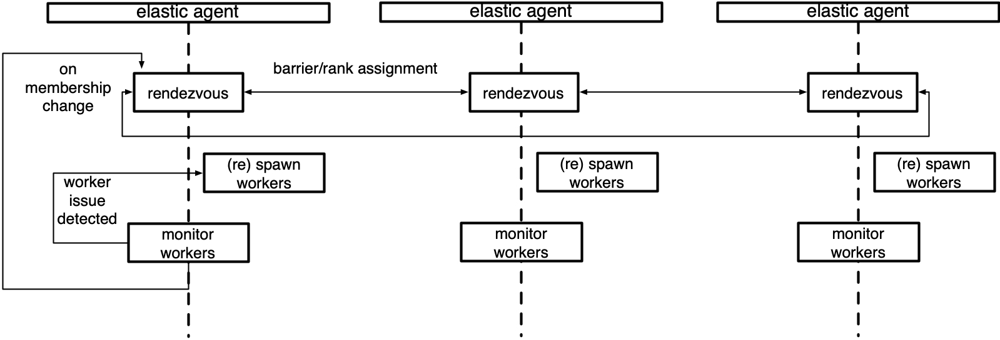

Elastic Agent ¬
服务器 ¬
灵活的代理是 torchelastic 的控制平面。
它是一个启动和管理底层工作进程的过程。代理负责：
与分布式 torch 协同工作：工作进程启动时携带所有必要信息，以便成功且简单地调用
torch.distributed.init_process_group()。错误容错：监控工作进程，并在检测到工作进程故障或不健康时，关闭所有工作进程并重新启动所有人。
弹性：对成员变更做出反应，并使用新成员重启工作进程。
最简单的代理在每个节点上部署并处理本地进程。更高级的代理可以远程启动和管理工作进程。代理可以是完全去中心化的，根据其管理的工人做出决策。或者可以协调，与其他代理（管理相同工作的工人）通信以做出集体决策。
下面是一个管理本地工作进程组的代理的示意图。
概念 ¶
本节描述了与理解 torchelastic 中 agent 角色相关的类和概念。
- class torch.distributed.elastic.agent.server.ElasticAgent[source][source]¶
负责管理一个或多个工作进程的代理进程。
假设工作进程是常规的分布式 PyTorch 脚本。当代理进程创建工作进程时，代理进程为工作进程提供必要的信息，以便工作进程正确初始化 torch 进程组。
代理的部署拓扑和代理与工作者的比例取决于代理的具体实现和用户的作业放置偏好。例如，要在 GPU 上运行一个具有 8 个训练师（每个 GPU 一个）的分布式训练作业，可以：
使用 8 个单 GPU 实例，每个实例放置一个代理，每个代理管理 1 个工作者。
使用 4 个双 GPU 实例，每个实例放置一个代理，每个代理管理 2 个工作者。
使用 2 个四 GPU 实例，每个实例放置一个代理，每个代理管理 4 个工作者。
使用 1 个 x8 GPU 实例，每个实例放置一个代理，每个代理管理 8 个工作者。
使用说明
group_result = agent.run() if group_result.is_failed(): # workers failed failure = group_result.failures[0] logger.exception("worker 0 failed with exit code : %s", failure.exit_code) else: return group_result.return_values[0] # return rank 0's results
- 获取工作者组（role='default'）[源代码][源代码] ¶
返回给定
role的WorkerGroup。注意，工作者组是一个可变对象，因此在多线程/进程环境中，其状态可能会改变。鼓励实现者（但不是必需）返回一个防御性的只读副本。
- 返回类型:
- 抽象运行（role='default'）[来源][来源] ¶
运行代理。
支持在失败时重试工作组，最多重试
max_restarts次。- 返回值:
执行结果，包含每个工作者的全局排名映射的返回值或失败详情。
- 引发:
异常 - 与工作者进程无关的其他失败。
- 返回类型:
- class torch.distributed.elastic.agent.server.WorkerSpec(role, local_world_size, rdzv_handler, fn=None, entrypoint=None, args=(), max_restarts=3, monitor_interval=0.1, master_port=None, master_addr=None, local_addr=None)[source][source]¶
某种特定类型工人的蓝图信息。
对于一个给定的角色，必须只存在一个工人规范。工人规范应跨所有节点（机器）保持一致，即每个节点运行相同数量的工人。
- 参数:
角色 str - 用户定义的具有此规范的工人的角色
local_world_size (int) - 运行的本地工人数
fn (Optional[Callable]) – (已弃用，请使用 entrypoint 代替)
entrypoint (Optional[Union[Callable, str]]) – 工作函数或命令
args (tuple) – 传递给
entrypoint的参数rdzv_handler (RendezvousHandler) – 处理该组工作者的 rendezvous
max_restarts (int) – 工作进程的最大重试次数
monitor_interval (float) – 每
n秒监控工作进程的状态master_port (Optional[int]) – 如果未指定，则在 rank 0 上运行 c10d store 的固定端口，否则将选择一个随机的空闲端口
master_addr (Optional[str]) – 如果未指定，则在 rank 0 上运行 c10d store 的固定 master_addr，否则将选择 agent rank 0 的主机名
重定向 – 将标准流重定向到文件，通过传递映射选择性地重定向特定本地排名
tee – 将指定的标准流（组）输出到控制台和文件，通过传递映射选择性地 tee 特定本地排名，优先于
redirects设置。
- class torch.distributed.elastic.agent.server.WorkerState(value, names=<未提供>, *values, module=None, qualname=None, type=None, start=1, boundary=None)[source][source] ¶
表示
WorkerGroup的状态。工作组中的工作者状态会作为一个单元进行更改。如果工作组中的单个工作者失败，则整个集合被视为失败：
UNKNOWN - agent lost track of worker group state, unrecoverable INIT - worker group object created not yet started HEALTHY - workers running and healthy UNHEALTHY - workers running and unhealthy STOPPED - workers stopped (interrupted) by the agent SUCCEEDED - workers finished running (exit 0) FAILED - workers failed to successfully finish (exit !0)
工作组从初始的
INIT状态开始，然后进展到HEALTHY或UNHEALTHY状态，最终达到终端的SUCCEEDED或FAILED状态。工作组可以被中断并暂时置于
STOPPED状态，由代理进行。处于STOPPED状态的工人将由代理安排在不久的将来重启。以下是将工人置于STOPPED状态的几个例子：观察到工作组故障|不健康
检测到成员变更
当工作组成员上的操作（开始、停止、rdzv、重试等）失败并导致操作仅部分应用于工作组成员时，状态将为
UNKNOWN。通常这种情况发生在代理状态变化事件中的未捕获/未处理的异常期间。代理不期望从UNKNOWN状态恢复工作组成员，最好是自行终止，并允许作业管理器重试节点。
- class torch.distributed.elastic.agent.server.Worker(本地 rank, 全局 rank=- 1, 角色 rank=- 1, 世界大小=- 1, 角色世界大小=- 1)[source][source] ¶
工作实例。
与表示工作规格的
WorkerSpec进行对比。一个Worker由一个WorkerSpec创建。一个Worker对一个WorkerSpec的关系，就像对象对类的关系。工作实例的
id由ElasticAgent的特定实现进行解释。对于本地代理，它可能是工作实例的pid (int)，对于远程代理，它可能被编码为host:port (string)。- 参数:
id（任何）- 唯一标识一个工作者（由代理解释）
local_rank（整数）- 工作者的本地域排名
global_rank（整数）- 工作者的全局排名
role_rank（整数）- 在具有相同角色的所有工作者中的排名
world_size (int) – 全局工作进程数量
role_world_size (int) – 具有相同角色的工作进程数量
实现说明
以下是 torchelastic 提供的代理实现。
- class torch.distributed.elastic.agent.server.local_elastic_agent.LocalElasticAgent(spec, logs_specs, start_method='spawn', exit_barrier_timeout=300, log_line_prefix_template=None)[source][source]
torchelastic.agent.server.ElasticAgent的实现，用于处理主机本地工作者。此代理在每个主机上部署，并配置为启动
n工作者。当使用 GPU 时，n映射到主机上可用的 GPU 数量。本地代理不会与其他主机上部署的其他本地代理通信，即使工作者可能进行跨主机通信。工作者 ID 被解释为本地进程。代理作为一个整体启动和停止所有工作者进程。
工作者函数和传递给工作者函数的参数必须与 Python 多进程兼容。要传递多进程数据结构给工作者，你可以在与指定的
start_method相同的多进程上下文中创建数据结构，并将其作为函数参数传递。“
exit_barrier_timeout指定了等待其他代理完成的时间（以秒为单位）。这作为一个安全网，用于处理工作者在不同时间完成的情况，以防止代理将提前完成的工作者视为缩放事件。强烈建议用户代码确保以同步方式终止工作者，而不是依赖于 exit_barrier_timeout。”“如果
`LocalElasticAgent`进程中定义了一个值为 1 的环境变量TORCHELASTIC_ENABLE_FILE_TIMER，则可以在`LocalElasticAgent`中启用基于命名管道的看门狗。可选地，还可以设置另一个环境变量`TORCHELASTIC_TIMER_FILE`，以唯一的文件名命名命名管道。如果未设置环境变量`TORCHELASTIC_TIMER_FILE`，`LocalElasticAgent`将内部创建一个唯一的文件名并将其设置为环境变量`TORCHELASTIC_TIMER_FILE`，并将此环境变量传播到工作者进程，以便它们可以连接到`LocalElasticAgent`使用的同一命名管道。”日志被写入指定的日志目录。默认情况下，每条日志行都会以
[${role_name}${local_rank}]:（例如[trainer0]: foobar）为前缀。可以通过传递模板字符串作为log_line_prefix_template参数来自定义日志前缀。以下宏（标识符）在运行时会被替换：${role_name}, ${local_rank}, ${rank}。例如，要使用全局排名而不是本地排名来前缀每条日志行，请设置log_line_prefix_template = "[${rank}]:。示例启动函数
def trainer(args) -> str: return "do train" def main(): start_method="spawn" shared_queue= multiprocessing.get_context(start_method).Queue() spec = WorkerSpec( role="trainer", local_world_size=nproc_per_process, entrypoint=trainer, args=("foobar",), ...<OTHER_PARAMS...>) agent = LocalElasticAgent(spec, start_method) results = agent.run() if results.is_failed(): print("trainer failed") else: print(f"rank 0 return value: {results.return_values[0]}") # prints -> rank 0 return value: do train
示例启动二进制文件
def main(): spec = WorkerSpec( role="trainer", local_world_size=nproc_per_process, entrypoint="/usr/local/bin/trainer", args=("--trainer-args", "foobar"), ...<OTHER_PARAMS...>) agent = LocalElasticAgent(spec) results = agent.run() if not results.is_failed(): print("binary launches do not have return values")
扩展代理
要扩展代理，您可以直接实现 `ElasticAgent ，但我们建议您扩展 SimpleElasticAgent ，它提供了大部分的框架，并留给你一些具体的抽象方法来实现。
- class torch.distributed.elastic.agent.server.SimpleElasticAgent(spec, exit_barrier_timeout=300)[source][source]¶
一个管理特定类型工作角色的
ElasticAgent。一个管理单个
WorkerSpec（如特定类型的工作角色）的工人（WorkerGroup）的ElasticAgent。- _assign_worker_ranks(store, group_rank, group_world_size, spec)[source][source]¶
确定工作进程的正确排名。
快速路径：当所有工作进程具有相同的角色和世界大小时。我们计算全局排名为 group_rank * group_world_size + local_rank。角色世界大小与全局世界大小相同。在这种情况下不使用 TCP 存储。仅在用户设置环境变量 TORCH_ELASTIC_WORKER_IDENTICAL 为 1 时启用。
时间复杂度：每个工作进程 O(1)，总体 O(1)
慢路径：当工作者具有不同的角色和世界大小时。我们使用以下算法：
每个代理将其配置（group_rank、group_world_size、num_workers）写入公共存储。
排名 0 的代理从存储中读取所有 role_info，并确定每个代理的工作者排名。
确定全局排名：工作者的全局排名是通过其前面所有工作者的 local_world_size 的累积和来计算的。为了提高效率，每个工作者被分配一个基本全局排名，使得其工作者位于[base_global_rank, base_global_rank + local_world_size)的范围内。
确定角色排名：角色排名使用第 3 点中的算法确定，但排名是相对于角色名称计算的。
排名 0 的代理将分配的排名写入存储。
每个代理从存储中读取分配的排名。
时间复杂度：每个工作代理 O(1)，rank0 O(n)，总体 O(n)
- 返回类型:
list[torch.distributed.elastic.agent.server.api.Worker]
- _exit_barrier()[source][source]¶
定义一个屏障，使代理进程保持活动状态，直到所有工作进程完成。
等待
exit_barrier_timeout秒，直到所有代理完成执行其本地工作进程（无论成功与否）。这作为防止用户脚本在不同时间终止的安全防护。
- 初始化工作者(worker_group)[source][source] ¶
为 worker_group 启动一组新的工作者。
实质上，这是一个会合后跟随的
start_workers。调用者应在调用此方法之前首先调用_stop_workers()来停止运行工作者。乐观地设置刚刚启动的工作者组的状态为
HEALTHY，并将实际状态监控委托给_monitor_workers()方法。
- 抽象 _monitor_workers(worker_group)[source][source] ¶
检查
worker_group的工作者。此函数还返回工作者组的新状态。
- 返回类型:
- _rendezvous(worker_group)[source][source]¶
为指定的 worker 运行 rendezvous。
为 worker 分配新的全局排名和世界大小。更新 worker 组的 rendezvous 存储。
- abstract _shutdown(death_sig=Signals.SIGTERM, is_restart=False)[source][source]¶
清理代理工作期间分配的任何资源。
- 参数:
death_sig (Signals) – 发送给子进程的信号，默认为 SIGTERM
- 抽象 _start_workers(worker_group)[source][source] ¶
启动
worker_group.spec.local_world_size工作进程数。这是根据工作进程组的工作进程规范。返回从
local_rank到工作进程id的映射。- 返回类型:
dict[int, Any]
- class torch.distributed.elastic.agent.server.api.RunResult(state, return_values=<factory>, failures=<factory>)[source][source]¶
返回工作执行的结果。
运行结果遵循“全有或全无”策略，只有当此代理管理的所有本地工作都成功完成时，运行才成功。
如果结果是成功的（例如
is_failed() = False），则return_values字段包含由该代理管理的工件的输出（返回值），按它们的全局排名映射。也就是说，result.return_values[0]是全局排名 0 的返回值。注意
return_values仅在工件入口点为函数时才有意义。指定为二进制入口点的工件没有规范化的返回值，return_values字段没有意义，可能为空。如果
is_failed()返回True，则failures字段包含失败信息，再次，通过失败工作者的全局排名进行映射。return_values和failures中的键是互斥的，也就是说，工作者的最终状态只能是以下之一：成功、失败。根据代理的重启策略由代理有意终止的工作者，在return_values或failures中均不表示。
代理中的看门狗
如果在 `LocalElasticAgent` 进程中定义了一个值为 1 的环境变量 TORCHELASTIC_ENABLE_FILE_TIMER ，则可以在 `LocalElasticAgent` 中启用基于命名管道的看门狗。可选地，还可以设置另一个环境变量 `TORCHELASTIC_TIMER_FILE` ，用于设置唯一的文件名。如果未设置环境变量 `TORCHELASTIC_TIMER_FILE` ， `LocalElasticAgent` 将内部创建一个唯一的文件名并将其设置为环境变量 `TORCHELASTIC_TIMER_FILE` ，并将此环境变量传播到工作进程，以便它们可以连接到 `LocalElasticAgent` 使用的同一命名管道。
健康检查服务器
如果在 `LocalElasticAgent` 进程中已定义环境变量 TORCHELASTIC_HEALTH_CHECK_PORT ，则可以在 `LocalElasticAgent` 中启用健康检查监控服务器。添加健康检查服务器的接口，可以通过在指定的端口号上启动 tcp/http 服务器进行扩展。此外，健康检查服务器将具有回调以检查看门狗是否存活。
- class torch.distributed.elastic.agent.server.health_check_server.HealthCheckServer(alive_callback, port, timeout)[source][source]¶
健康检查监控服务器的接口，可以通过在指定的端口号上启动 tcp/http 服务器进行扩展。
- 参数:
alive_callback (Callable[[], int]) – Callable[[], int]，回调到代理的最后进度时间
port (int) – int，启动 tcp/http 服务器的端口号
timeout (int) – int，决定代理是否存活/死亡的超时秒数